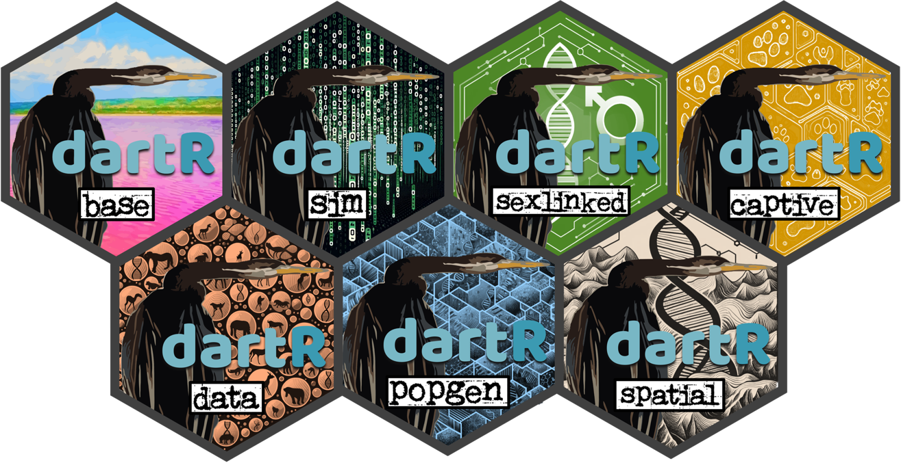
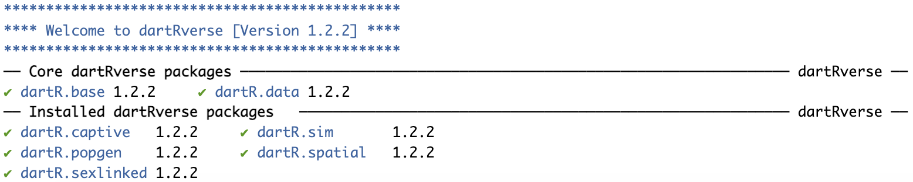
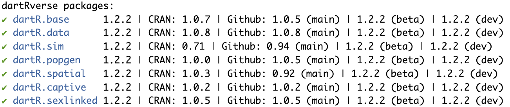

#installs the necessary bioconductor packages
install.packages("devtools")
install.packages("BiocManager")
BiocManager::install("SNPRelate")
#install dartRverse (dartRverse) & core (dartR.base, dartR.data)
install.packages("dartRverse")Install dartRverse

Rationale
We have developed a new suit of packages called “dartRverse” packages, that will replace the previous dartR package, which soon will be no longer supported. The new suit of packages are meant to be a 1:1 replacement and only in some instance very minor changes will be needed to update previous code. For example we reworked on the “output” of all functions, now being able to save figures in specified folders, which can be easier recovered and manipulated for further tweaking. The main reasons for splitting dartR into several packages and developing the dartRverse suit of packages was difficulty to maintain dartR, because of limits imposed by CRAN, but also limits due the the long time to test new function, when compiling the package. Therefore we were forced to split the package into several smaller packages. This has several advantages and in the best of all cases no disadvantages.
- easier maintenance
- faster development
- less dependencies on other packages
- easier to become a contributor
- have your own package developed that can be branded as part of the dartRverse
The main paradigm was also that for our users nothing (or at as little as possible) needed to change and all existing code and scripts should still work. Also the installation process was meant to be straightforward and finally the coexistance between dartR and dartRverse packages should be possible (for the interim until dartR will be no longer supported).
Installation
install dartRverse
The dartRverse package is the first package to install and its only purpose is to support the installation of the other dartRverse packages. It will also be the first port of call to provide links to tutorials and other documentation.
If everything works well this should install two more packages with form the core version of dartRverse, nameley dartR.base and dartR.data. Those core packages have all the main function of old dartR package that deals with input, conversion, reporting and filtering of data. Also some base function to analysse data (e.g. PCoA, Fst) are included.
Once the dartRverse package has been installed we can load the package to check which part of the dartRverse has been installed.
library(dartRverse)
install additional packages
Now we can install the additional packages that are part of the dartRverse. Depending on your needs you can install all of them or only the one you are interested.
For example if you are interested in additional functions to analyse population structure (e.g. run STRUCTURE or faststructure) you can install the dartR.popgen package. If you are interested in functions that support the simulation of data you can install the dartR.sim package.
You can check which packages are available and which of them you have installed by typing:
dartRverse::dartRverse_install()
The currently available packages are:
- dartR.sim (simulate SNP data)
- dartR.popgen (run population genetic analysis)
- dartR.spatial (run landscape genetic analysis)
- dartR.captive (estimate relatedness, support captive breeding)
- dartR.sexlinked (identify sexlinked markers)
So to install the dartR.sim simply type:
install.packages("dartR.sim")
install.packages("dartR.popgen")
install.packages("dartR.spatial")
install.packages("dartR.captive")
install.packages("dartR.sexlinked")Github repositories
We make all of our packages available via CRAN. The reason for this is that CRAN packages follow a stringent testing before they are allowed to be uploaded to CRAN and therefore are more likely to contain less errors then packages that are available on other repositories. Nevertheless we also make our packages available during development via github.
You can find the repositories under: https://github.com/green-striped-gecko/dartR.base [for the dartR.base package] and equivalent for the other packages.
The reason why you might want to install a package from github is that you want to use the latest version of the package. However, you should be aware that the packages on github are not tested and therefore might contain errors. Also the packages on github might be updated on a daily basis and therefore might change without notice.
We use different branches and they are reflecting different stages of development and majurity.
- main (the main branch, which is equivalent to the current CRAN version)
- dev (development branch, which has the latest functions that might be in the next CRAN version, but have not been tested yet)
- dev_name (these are branches of our main developers and are used for testing and development of new functions. Installing functions from here might cause problems and should only be done if you know what you are doing)
dartRverse supports the installation of github version of the packages using the following syntax:
dartRverse_install(package = "dartR.base", repo = "github", branch = "dev")
This install the dev branch of dartR.base from CRAN. All main and dev branches are tested if they can be installed (and some additional error checks via): https://github.com/green-striped-gecko/dartRverse
Please note that you should provide the package repository (github/cran), the branch (main, dev,dev_name) and version number in case you want to report a bug. You can use the github methods to report issues or use our google group: https://groups.google.com/d/forum/dartr.
Using dartRverse
To use dartRverse you can simply load the package and use it as before.
library(dartRverse)